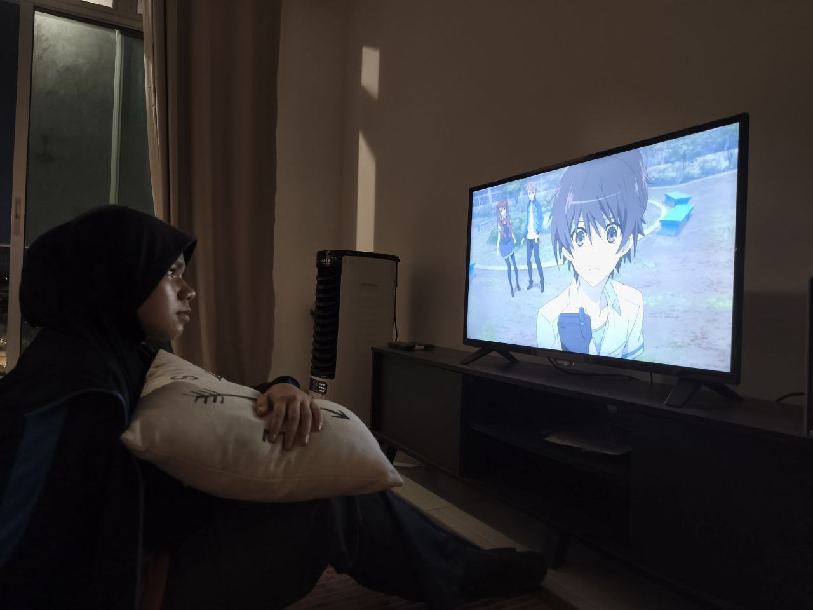
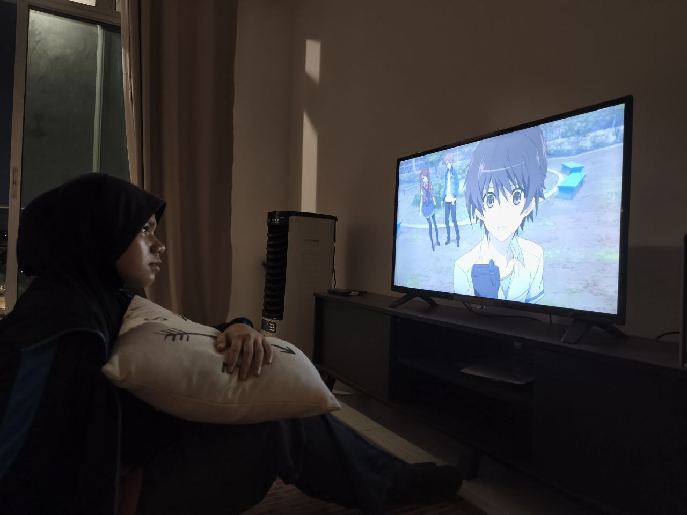

Another is a dark and creepy anime about a cursed classroom where strange and deadly accidents keep happening. The story follows a boy named Kouichi who transfers to a new school and meets a quiet girl named Mei, who seems to be ignored by everyone. As he gets closer to her, scary events begin, and they try to uncover the mystery behind the curse. The anime has a lot of suspense, blood, and shocking moments. It’s great for people who enjoy horror and mystery, with a serious and chilling story that keeps you guessing until the end. I love the 'iconic' umbrella scene :D since it's giving Final Destination vibes. It's just, I don't like it when Mei already knows who is the impostor, and yet she choose to stay silence. Even when people accused her for being the 'dead', she choose to stay silenced and doesn't even try to defend herself (-_-) If she tells who is the 'dead' earlier, then everyone might be still alive.
RATING :
 
